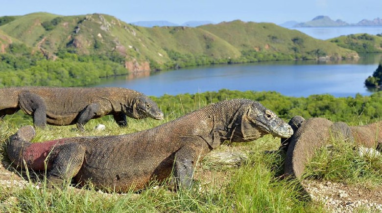

Pulau Komodo
Pulau Komodo terletak di Kepulauan Nusa Tenggara. Pulau Komodo dikenal sebagai habitat asli hewan komodo. Pulau ini juga merupakan kawasan Taman Nasional Komodo . Pulau Komodo berada di sebelah barat Pulau Sumbawa, yang dipisahkan oleh Selat Sape, termasuk wilayah Kecamatan Komodo, Kabupaten Manggarai Barat, Provinsi Nusa Tenggara Timur, Indonesia. Pulau Komodo merupakan ujung paling barat Provinsi Nusa Tenggara Timur, berbatasan dengan Provinsi Nusa Tenggara Barat.
Pulau Komodo, tempat hewan komodo hidup dan berkembang biak dengan baik. Hingga Agustus 2009, di pulau ini terdapat sekitar 1300 ekor komodo. Ditambah dengan pulau lain, seperti Pulau Rinca dan dan Pulau Gili Motang, jumlah keseluruhan mencapai sekitar 2500 ekor. diperkirakan sekitar 100 ekor komodo di Cagar Alam Wae Wuul di daratan Pulau Flores tapi tidak termasuk wilayah Taman Nasional Komodo.
Selain komodo, pulau ini juga menyimpan eksotisme flora yang beragam, pohon kayu sepang yang oleh warga sekitar digunakan sebagi obat dan bahan pewarna pakaian, pohon nitak (sterculia oblongata) ini di yakini berguna sebagai obat dan bijinya gurih dan enak seperti kacang polong.
Pulau Komodo sangat mengesankan , menelusuri pulau yang eksotis, menyelami birunya laut, dan bermandikan cahaya mentari sambil melihat jejak-jejak kehidupan masa lalu yang terpelihara dan akan menjadi bagian dari ragam keindahan Indonesia.
Taman Nasional Komodo
Meliputi Pulau Komodo, Rinca and Padar, ditambah pulau-pulau lain seluas 1.817 persegi adalah habitat asli komodo. Taman Nasional Komodo didirikan pada 1980 untuk melindungi kelestarian komodo. Tak hanya hewan langka tersebut, Taman Nasional Komodo juga untuk melindungi berbagai macam tumbuh-tumbuhan dan satwa, termasuk binatang-binatang laut. UNESCO mengakui sebagai Situs Warisan Dunia pada 1986. Bersama dua pulau besar lainnya, yakni Pulau Rinca dan Padar, Pulau Komodo dan beberapa pulau kecil di sekitarnya terus dipelihara sebagai habitat asli reptil yang dijuluki “Komodo”.
Sejarah
Komodo yang dijuluki Komodo dragon atau Varanus Komodoensis atau nama lokal “Ora”, kadal raksasa ini menurut cerita dipublikasikan pertama kali pada tahun 1912 di harian nasional Hindia Belanda. Peter A. Ouwens, direktur Museum Zoologi di Bogor adalah orang yang telah mengenalkan komodo kepada dunia lewat papernya itu. Semenjak itu, ekspedisi dan penelitian terhadap spesies langka ini terus dilakukan, bahkan dikabarkan sempat menginspirasi Film KingKong di tahun 1933. Menyadari perlunya perlindungan terhadap Komodo di tengah aktivitas manusia di habitat aslinya itu, pada tahun 1915 Pemerintah Belanda mengeluarkan larangan perburuan dan pembunuhan komodo.
Pulau Komodo masuk 28 finalis yang dipilih oleh sebuah panel ahli dari 77 nominasi. Sebelumnya ada 261 lokasi di dunia yang dicalonkan menjadi salah satu dari tujuh keajaiban dunia.
Pulau Komodo, yang jadi andalan Indonesia dalam ajang New7Wonders of Nature punya keunggulan di banding lokasi-lokasi lainnya, apalagi kalau bukan komodo, satwa langka yang dipercaya sebagai ‘dinosaurus terakhir di muka bumi’. Kampanye ini diharapkan dapat meningkatkan pengetahuan mengenai alam, tak hanya yang ada di lingkungan kita tapi juga di seluruh dunia. serta didedikasikan untuk generasi di masa depan.
Komodo yang dikenal dengan nama ilmiah Varanus komodoensis adalah spesies kadal terbesar di dunia yang hidup di pulau Komodo, Rinca, Flores, Gili Motang, dan Gili Dasami di Nusa Tenggara. Oleh penduduk setempat, komodo kerap disebut Ora.
Termasuk anggota famili biawak Varanidae, dan klad Toxicofera, komodo merupakan kadal terbesar di dunia, dengan rata-rata panjang 2-3 m. Ukurannya yang besar ini berhubungan dengan gejala gigantisme pulau, yakni kecenderungan meraksasanya tubuh hewan-hewan tertentu yang hidup di pulau kecil terkait dengan tidak adanya mamalia karnivora di pulau tempat hidup komodo, dan laju metabolisme komodo yang kecil. Karena besar tubuhnya, kadal ini menduduki posisi predator puncak yang mendominasi ekosistem tempatnya hidup.
Komodo ditemukan pada 1910. Tubuhnya yang besar dan reputasinya yang mengerikan membuat mereka populer di kebun binatang. Habitat komodo di alam bebas telah menyusut dan karenanya IUCN memasukkan komodo sebagai spesies yang rentan terhadap kepunahan. Biawak besar ini kini dilindungi di bawah peraturan pemerintah Indonesia dan sebuah taman nasional didirikan untuk melindungi mereka.